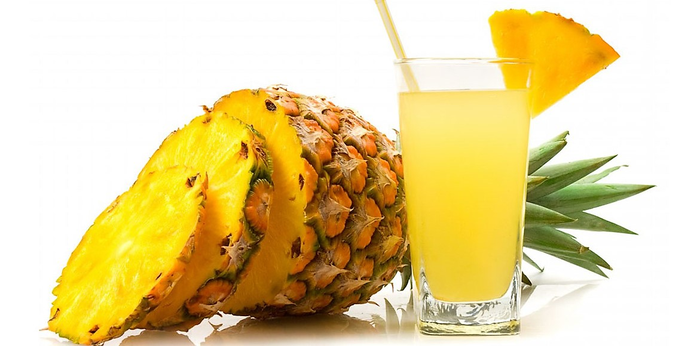

Buah Apel

Manfaat Buah Apel
Apel mengandung berbagai nutrisi penting seperti serat,
vitamin C, vitamin A, dan kalium.
Serat membantu menjaga kesehatan pencernaan
dan mencegah sembelit,
sementara vitamin C dan A berperan dalam
memperkuat sistem kekebalan tubuh anak-anak.
S
Buah Jeruk
|
Manfaat Buah JerukManfaat buah jeruk sangat penting untuk kesehatan tubuh manusia, |
Buah Naga
|
Manfaat Buah NagaManfaat buah naga untuk wajah rupanya cukup beragam, |

Buah Nenas |
Manfaat Buah NenasManfaat nanas berikutnya adalah membantu meringankan gejala sinusitis, |
Buah Avocado
|
Manfaat Buah AvocadoManfaat buah alpukat adalah mengontrol tekanan darah |